CS184/284A Spring 2025 Homework 2 Write-Up
Names: Sofia valadez
Link to webpage: cs184.eecs.berkeley.edu/sp26/hw/hw2
Link to GitHub repository: (TODO) cs184.eecs.berkeley.edu/sp25

Overview
On this assignment, we used the de Casteljau algorithm to implement Bezier curves and surfaces. We also used triangle meshes with loop subdivision and half-edge data structure.Section I: Bezier Curves and Surfaces
Part 1: de Casteljau’s algorithm uses recursion to evaluate a point on a Bezier curve with linear interpolation. Using a parameter t (that takes values from (0,1)), it interpolates between the given points to create new ones until there is only one left. This algorithm was implemented in this homework by creating a function that did 'one step' of the interpolation. It takes in a vector of given 'control' n points and returns a vector with the resulting interpolated n - 1 points. This is called repeatedly until only one point is returned
different steps of the interpolation
|
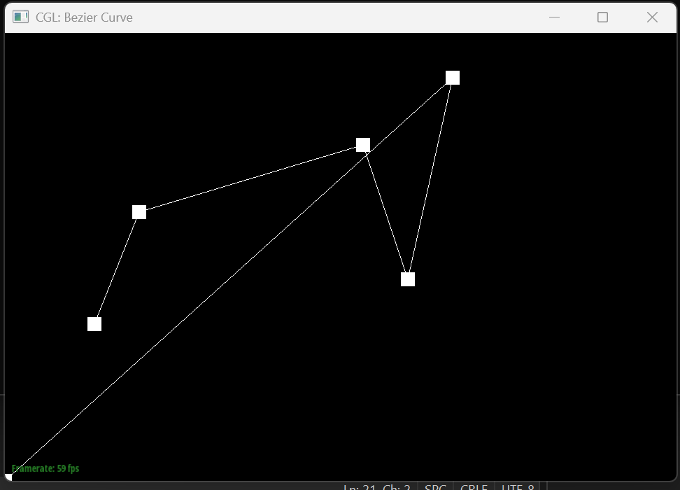 |
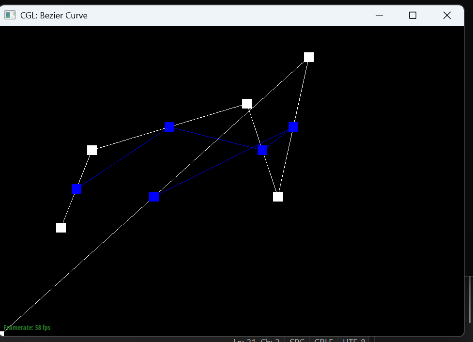 |
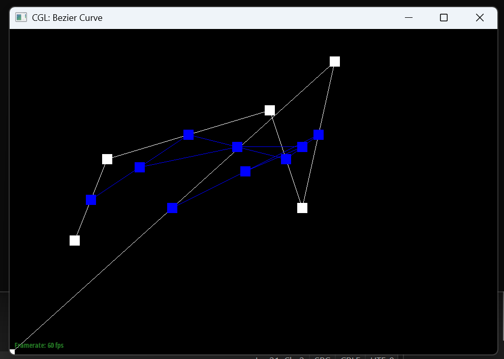 |
|
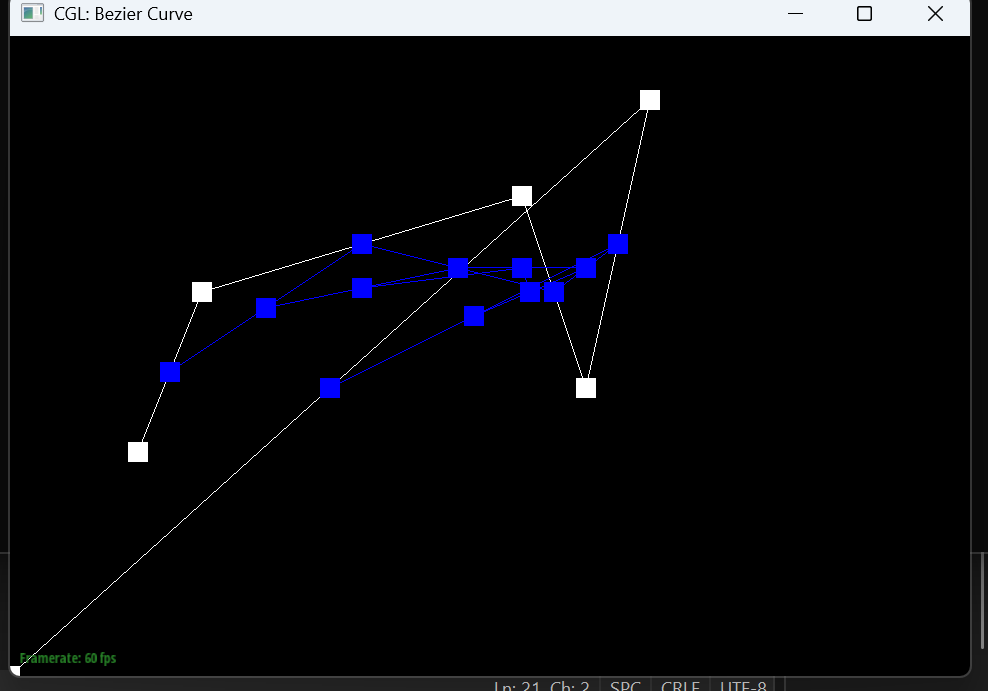 |
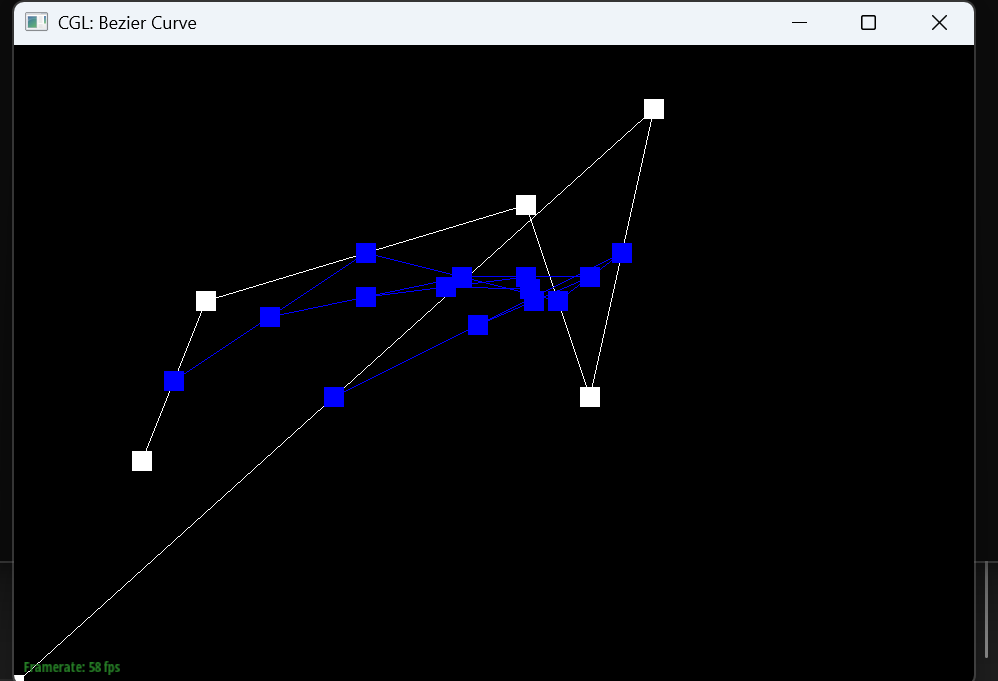 |
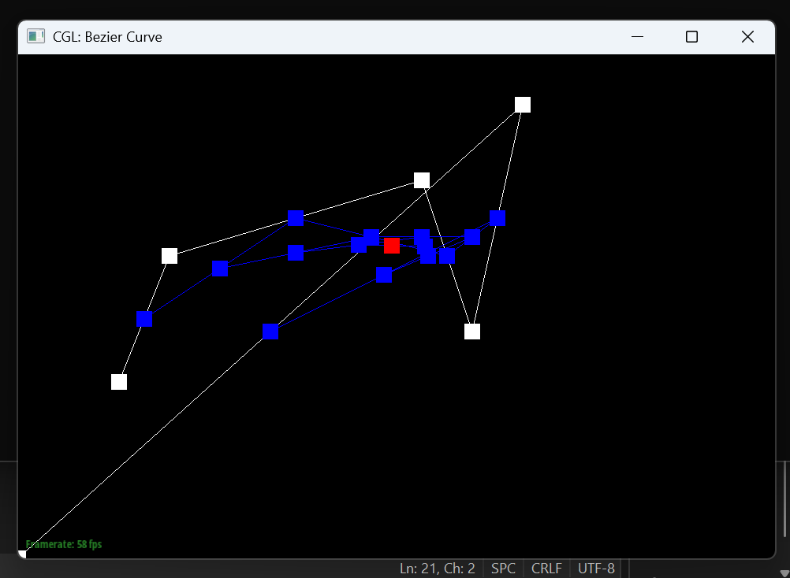 |
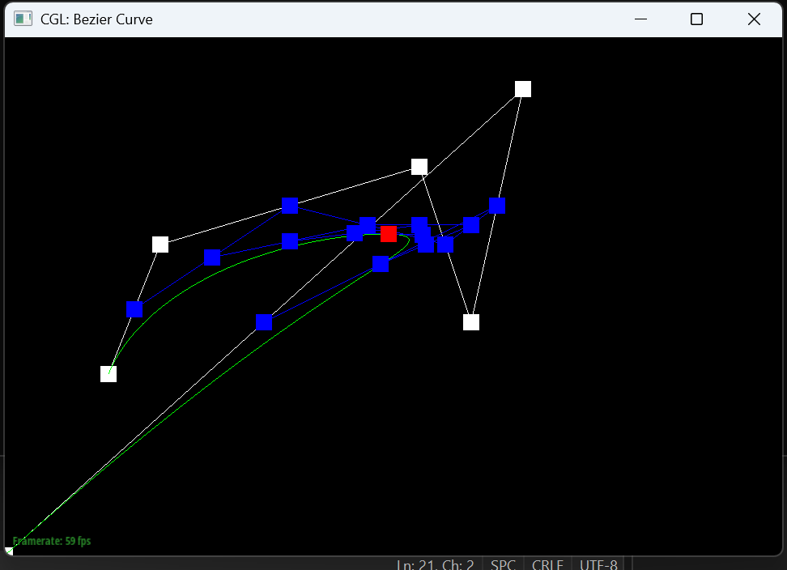
Part 2: Bezier surfaces with separable 1D de Casteljau
We can also use de Casteljau’s algorithm for Bezier surfaces, not just curves. By doing so, we modify it so it now takes in 2 paramemters, u, v. Instead of just a vector containing control points, this function takes in a matrix. Each row is treated as a Bezier curve and evaluated with u. The resulting 'column' of each 'row point' is evaluated again as Bezier curves with v as the new parameter. The final point is the the one on the Bezier surface.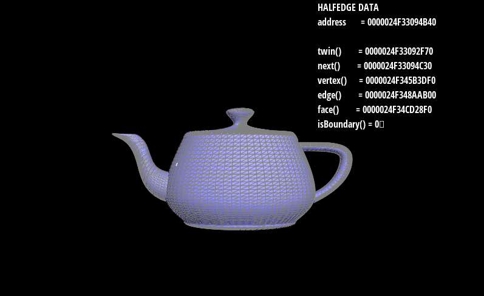
Section II: Triangle Meshes and Half-Edge Data Structure
Part 3: Area-weighted vertex normals
This section was implemented by iterating through the adjacent faces of vertices using halfedges. For each face, you compute 2 edge vectors from 3 vertices and use the cross product get the face normal (whose magnitude is proportional to the triangle's area). All these face normals then get used to produce the unit vertex normal.|
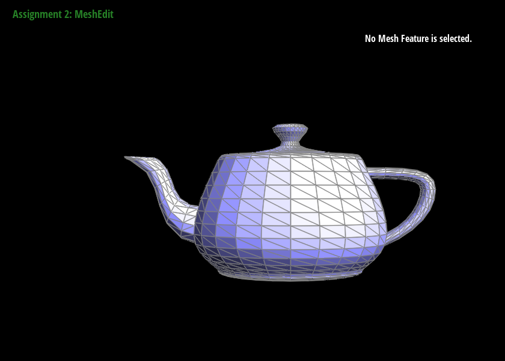 |
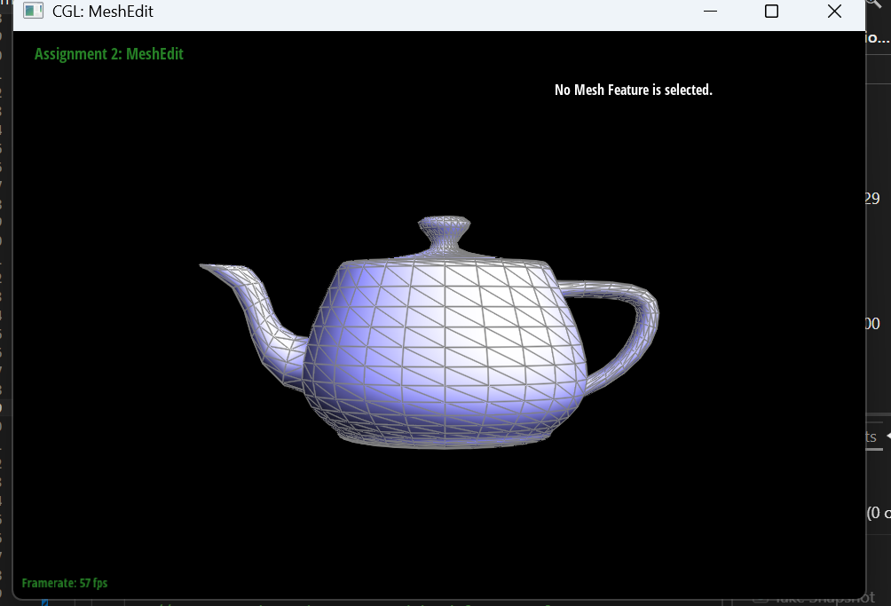 |
Part 4: Edge flip
This section was implemented with the edge flip operation by first checking if the selected edge or its adjacent faces are on the boundary. If so, the function would return immediately. If not, 6 halfedges involved in the adjacent triangles and their respective vertices, edges, and faces were collected. After that, to flip the edges, you reassinged the edges to face the other way (or into the other triangle).|
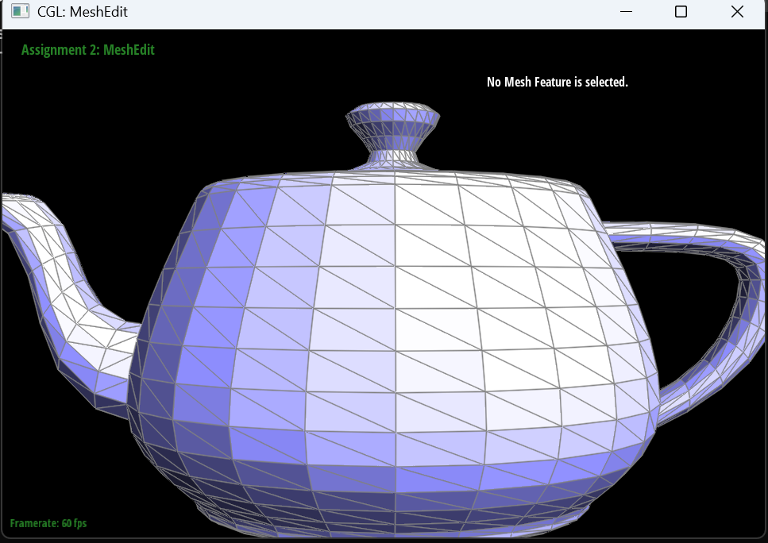 |
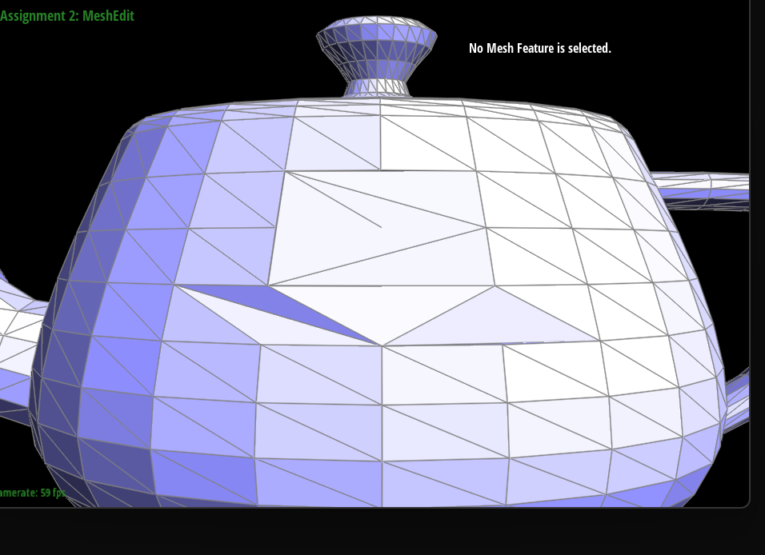 |